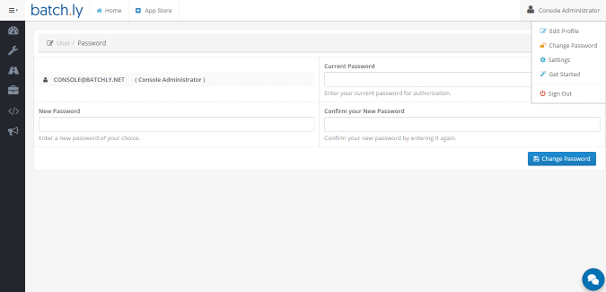
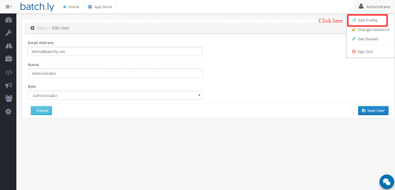
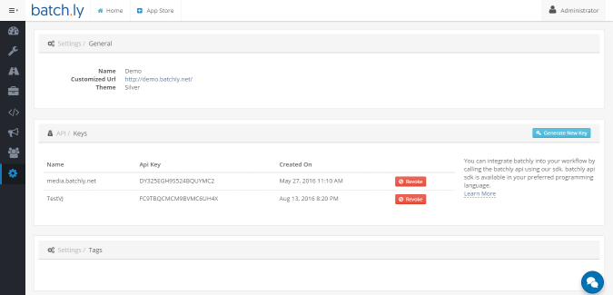

Change Password
You can change your Batchly password at anytime.
-
Sign in to your Bacthly account.
-
Click on the name given on the top-right corner.
-
Select Change Password.

Edit Profile Settings
You can change your profile settings ( Email, Name, Role ) at any time.
-
You can click on the name given on the top-right corner from the header.
-
Select Edit Password.

Settings
From the settings, you can generate API Keys. Also, you can revoke those keys when not required.
-
You can click on the name given on the top-right corner from the header.
-
Select Settings.
